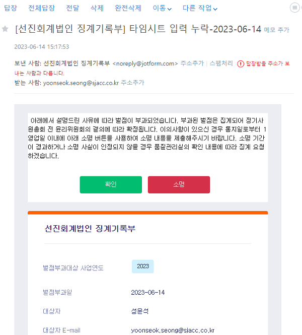
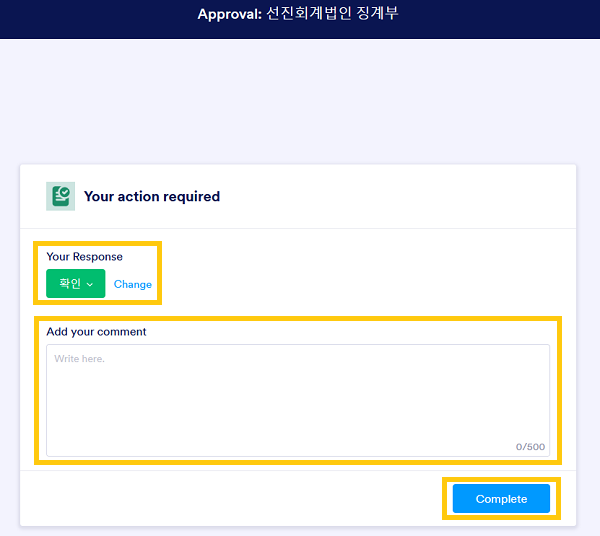
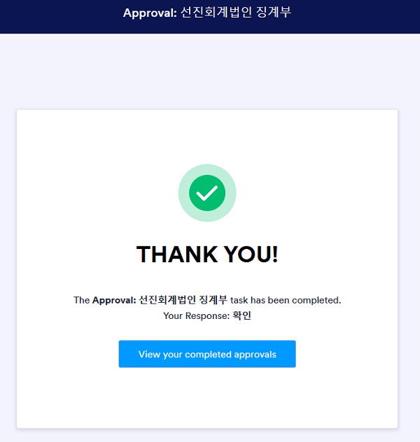
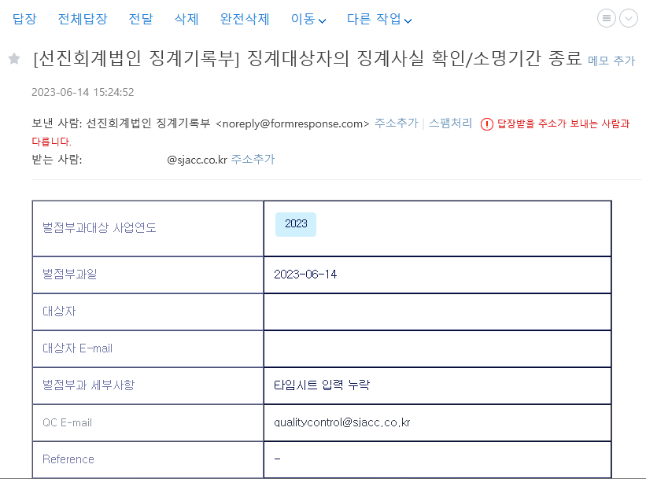
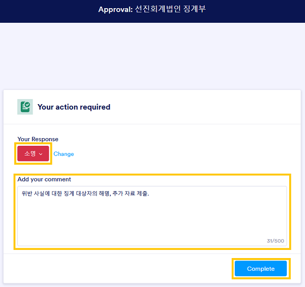
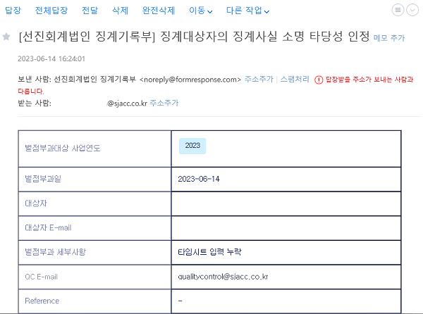
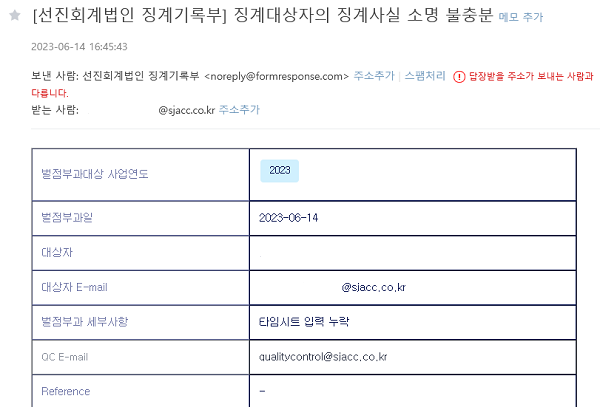

자문
개요#
본 항목은 감사업무 자문절차에 대하여 안내합니다. 해당 절차는 감사업무의 수행 시 회계/회계감사에 관한 필수 자문대상의 공식적 자문절차에 적용합니다.
관련 규정#
법인의 자문절차는 품질관리규정 제31조-제34조에서 정한 바에 따릅니다.
자문 절차의 성격#
품질관리기준서나 외감규정 별표1 등록요건은 자문절차를 설계, 운영할 것을 요구하고 있습니다. 그러나 근거 규정은 '자문(consultation)'이 무엇인지 정의하지는 않습니다.
품질관리기준서는 자문 대상으로 '어렵거나 논쟁의 여지가 있는 사항'이라 정하고 있습니다.
품질관리기준서 문단 34, A36-A40
자문
34 회계법인은 다음 사항에 대한 합리적 확신을 제공하도록 설계된 정책과 절차를 수립하여야 한다.(a) 어렵거나 논쟁의 여지가 있는 사항에 대하여 적합한 자문이 이루어짐.(b) 적합한 자문이 이루어질 수 있도록 충분한 자원이 이용 가능함.(c) 이러한 자문의 성격과 범위, 그리고 해당 자문에 따른 결론이 문서화되며, 이에 대하여 자문을 구하는 사람과 자문을 제공한 사람이 모두 동의함.(d) 자문에 따른 결론이 실행됨. (문단 A36-A40 참조)
자문 (문단 34 참조)
A36 자문에는 특별한 전문성을 가진 회계법인 내·외의 개인과의 적절한 전문적 수준의 토의가 포함된다.
A37 자문에는 회계법인의 집합적인 경험과 기술적 전문성뿐 만 아니라 적합한 연구자원들이 활용된다. 자문은 품질을 높이고 전문가적 판단을 향상시킨다. 회계법인의 정책과 절차에서 자문을 적절하게 인정하는 것은 자문이 강점으로 인정되는 문화를 촉진하며 구성원들이 어렵거나 논란의 여지가있는 사항에 대해 자문을 구하도록 격려한다.
A38 유의적인 기술적, 윤리적 및 기타 사항들에 대하여 회계법인 내부(또는 해당되는 경우, 외부)의 효과적인 자문은 다음과 같은 경우에 이루어질 수 있다.• 해당 문제에 정통한 조언을 제공할 수 있도록 자문제공자에게 모든 관련 사실이 제공됨.• 자문제공자가 적절한 지식과 연륜 및 경험을 가지고 있음.또한 자문의 결론이 적절히 문서화되고 실행되어야 한다.
A39 어렵거나 논란의 여지가 있는 사항에 대한 다른 전문가들의 자문을 아주 완벽하고 자세하게 문서화하면, 다음 사항을 이해하는 데 도움이 된다.• 자문을 구하였던 이슈• 자문의 결과 (관련 결정, 그러한 결정의 근거 및 해당 결정의 실행방법 포함)
소규모 회계법인에 특유한 고려 사항
A40 예를 들어 적절한 내부자원이 없는 경우와 같이, 외부에서 자문을 받을 필요가 있는 회계법인은 다음과 같이 자문서비스를 받을 수 있을 것이다.• 다른 회계법인 • 전문직 단체나 규제기관 • 관련 품질관리서비스를 제공하는 상업적 조직 회계법인이 이러한 자문서비스를 계약하기 전에 외부 자문제공자의 적격성과 역량을 검토하면, 외부 자문제공자가 해당 목적에 적격한지 결정하는 데 도움이 된다.
한편, 등록요건은 품질관리실 전담 업무로 자문을 포함합니다. 외부감사시 준수해야 할 법령, 전문지식 등에 대한 자문입니다.
등록요건 [별표 1] 주권상장법인 감사인 등록요건(제8조제1항 관련) 1. 인력
라. 품질관리업무 담당이사와 품질관리업무 담당자는 다음의 업무만을 수행한다.1) 품질관리 제도의 설계 및 관리2) 감사보고서 발행 전ㆍ후 심리(감사업무 수행과정에서의 중요한 판단 사항 및 감사보고서 작성 내용을 감사조서, 증빙자료 등에 따라객관적으로 평가하여 감사의견에 흠결이 없도록 하는 품질관리 활동을 말한다)3) 법령등ㆍ회계처리기준ㆍ회계감사기준ㆍ품질관리기준 등 외부감사시 준수해야할 사항에 관한 자문4) 외부감사 업무 수임 건의 감사위험(감사인이 중요하게 왜곡표시되어 있는 재무제표에 대하여 부적절한 감사의견을 표명할 위험을 말한다. 이하 같다) 유무 확인 등 타당성 검토5) 품질관리 관련 교육훈련 기획 및 운영6) 법 제26제1항제3호에 따른 감리 결과에 대한 개선권고사항 이행상태점검7) 감사조서 관리8) 그 밖에 주권상장법인 감사인 등록요건 유지 등 품질관리에 관한업무
감사기준서 620 '감사인측 전문가가 수행한 업무의 활용'은 전문가 활용의 맥락에서 자문의 성격을 잘 드러내고 있습니다.
감사기준서 620 문단 1-2
1 이 감사기준서는 회계나 감사 외의 분야에서 전문성을 지닌 개인이나 조직의 업무가 감사인이 충분하고 적합한 감사증거를 입수하는 데 도움을 주기 위해 활용되는 경우 그러한 업무와 관련된 감사인의 책임을 다룬다.
2 이 감사기준서는 다음에 대해서는 다루지 아니한다.(a) 업무팀이 회계나 감사의 특정 전문 분야에 전문성을 지니고 있는 팀원을 보유하고 있거나, 그러한 전문성을 지닌 개인이나 조직에게 자문을 구하는 경우. 이는 감사기준서 220에서 다룬다.(b) 회계나 감사 외의 분야에 전문성을 지니고 있는 개인 또는 조직이 수행하는 해당 분야의 업무를 기업이 재무제표 작성을 지원하는 데 이용하고(경영진측 전문가), 감사인이 해당 경영진측 전문가가 수행한 업무를 활용하는 경우. 이는 감사기준서 500에서 다룬다.
감사기준서에 따라 판단하자면, 품질관리기준서의 자문은 감사업무에 회계, 감사 전문가를 활용한 경우를 의미합니다. 회계법인에 소속한 회계, 감사 전문가는 회계, 감사 논제에 대하여 토론하고, 상호 자문하는 문화에 익숙합니다. 중요한 사항에 대해서만 상호 자문이 이루어지는 것은 아닙니다. 또한, 모든 자문 내용이 문서화되는 것도 아닙니다.
품질관리기준서나 외감규정에서 요구하는 자문을 정식 자문(formal consultation) 절차라 부르고 관리하겠습니다. 정식 자문 절차는 중요한 회계, 감사 이슈에 대해 업무수행이사가 업무팀원과 심리 실시자를 포함한 내·외부 전문가의 의견을 수렴하여 내린 결론에 대하여, 품질관리업무 담당이사에게 문서로 동의(concurrence)를 구하고, 그 결과를 조서화하는 과정입니다.
자문 대상 - 중요한 회계, 감사 이슈#
내규에 따른 자문 대상은 다음과 같습니다.
법인내부 윤리규정 및 품질관리규정 징계지침의 징계항목
- 제2장 1. 금융감독원, 한국공인회계사회 감리시 경고 이상을 받을 때 : 감리결과에 따른 부과벌점
- 제2장 2. 심리방침에 따른 심리를 받지 않은 보고서를 발행하거나 공시할 때 : 벌점 10점
- 제2장 3. 심리받은 보고서와 발행·공시한 보고서가 다를 때 : 벌점 10점
- 제2장 4. 독립성 준수 확인서의 내용이 사실과 다를 때 : 벌점 10점
- 제2장 5. 외부감사시 감사인원수를 충족하지 못할 때 (외감: 2인 이상, 상장 및 코스닥: 3인 이상) : 벌점 10점
- 제2장 6. 모니터링 점검 결과 중대한 미비점이 발견된 경우 : 사안에 따라 벌점 5점에서 10점(법률 위배 등 중대한 경우 10점)
- 제2장 7. 주식거래내역 자료가 사실과 다를 때 : 벌점 10점
- 제2장 8. 적시에 타임레포트를 입력하지 않을 때 : 벌점 1점
- 제2장 9. 감사조서 관리규정 위반시 : 벌점 5점
- 제2장 10. 그 외 모든 품질관리 관련 자료를 지연 또는 부실 제출한 경우 : 벌점 5점
- 제2장 11. 기타 운영위원회가 징계가 필요하다고 판단한 사항 : 사안에 따라 벌점은 5점에서 10점
- 제3장 1. 법인명의의 대출. 단, 법인운영에 필요한 시설물 리스 또는 자동차할부는 제외 : 벌점 100점
- 제4장 명의대여에 관한 징계 : 벌점 100점
- 제5장 특정 명칭 사용에 관한 징계 : 벌점 100점
- 제6장 1. 소속 공인회계사가 매년 한국공인회계사회에서 정한 일정 시간의 교육을 미이수할 때 : 벌점 10점
징계 절차#
징계 절차는 ① 위반 사실의 적발 ② 징계대상 통보 및 소명 요청 ③ 확인 및 소명 절차 ④ 징계기록부 기록 ⑤ 윤리위원회 회부 및 결의 ⑥ 징계사항의 집행으로 진행됩니다.
위반 사실의 적발#
위반 사실은 품질관리실의 품질관리절차와 그에 대한 모니터링, 외부 기관의 징계사실 통보에 따라 적발됩니다.
징계대상 통보 및 소명 요청#
품질관리실은 다음의 형식에 따른 징계기록(안)을 징계 대상자에게 발생확인일에 이메일로 송부합니다. 소명 기간인 1 영업일 이내에 이메일의 '확인' 또는 '소명' 버튼을 누르면 브라우저의 새 탭이 열립니다. 통보 후 징계 대상자의 대응이 없는 경우, 1 영업일이 경과하면 소명절차가 종료되어 징계사실이 확인됩니다.

위반사실에 대한 확인#
위반 사실 확인#
'확인' 버튼을 클릭해서 생성되는 탭 화면은 다음과 같습니다.
- Your Response: 확인의 의미는 위반 사실을 인정한다는 것입니다.
- Add your comment: 사실의 인정에는 코멘트가 따로 필요없습니다. 코멘트를 추가할 수 있습니다.
- Complete: 상기 답변 내용을 제출합니다.

'Complete'를 클릭하면 다음과 같이 접수가 완료되었다는 화면을 확인할 수 있습니다.

위반 사실의 소명 기간의 경과#
통보 후 1 영업이 이내에 '확인' 혹은 '소명' 절차를 진행하지 않은 경우 확인 처리합니다.
징계 대상자는 기간내 소명하지 못한 경우, 윤리위원회에 출석하거나 서면을 제출하는 방법으로 소명할 수 있습니다. 윤리위원회 소명 기회에 관한 사항은 따로 안내하겠습니다.
위반 사실이 확인되었거나 소명 기간이 경과한 경우#
징계 대상자의 이메일 계정에는 다음과 같은 확인 내용이 송부됩니다.

위반 사실에 대한 소명#
'소명' 버튼을 클릭해서 생성되는 탭 화면은 다음과 같습니다. 소명을 제외한 추가 자료 제출 등 필요한 내용은 품질관리실장에게 바로 제출 부탁드립니다.
- Your Response: 소명의 의미는 위반 사실에 대하여 위반자는 다른 의견이 있다는 것입니다.
- Add your comment: 소명 내용을 요약 제출하여주세요.
- Complete: 상기 답변 내용을 제출합니다.

'Complete'를 클릭하면 다음과 같이 접수가 완료되었다는 화면을 확인할 수 있습니다.
소명 충분#
품질관리업무 담당이사는 징계 대상자의 소명 내용과 제출자료를 검토하여 위반 사실이 없다는 사실에 대한 소명이 충분하다고 결정할 수 있습니다. 이 경우 징계 대상자의 이메일 계정에는 다음과 같은 확인 내용이 송부됩니다.

소명 부족#
품질관리업무 담당이사는 징계 대상자의 소명 내용과 제출자료를 검토한 후, 위반 사실에 대한 소명이 부족하다고 판단할 수 있습니다. 이 경우 징계 대상자의 이메일 계정에는 다음과 같은 확인 내용이 송부됩니다.
징계 대상자는 품질관리업무 담당이사의 판단에 동의하지 않는 경우 윤리위원회에 출석하거나 서면을 제출하는 방법으로 소명할 수 있습니다. 윤리위원회 소명 기회에 관한 사항은 따로 안내하겠습니다.

징계기록부 기록#
품질관리실은 소명 절차에 따라 확인된 사항을 바탕으로 징계기록부를 기록합니다. 징계기록부 기록 내용은 윤리위원회 확정 여부에 상관없이 품질관리 성과평가에 활용합니다.
윤리위원회 회부 및 결의#
품질관리실이 연중 기록한 징계기록부는 매년 6월 운영위원회/윤리위원회에 회부됩니다. 징계기록은 윤리위원회의 심사를 거쳐 징계 여부가 확정됩니다.
위반 사항의 소명 과정에서 다음에 해당하는 경우 윤리위원회에 출석하거나 서면을 제출하는 방법으로 의사표명할 수 있습니다. 해당 인원에게는 운영위원회 소명에 관한 사항을 따로 안내하겠습니다.
- 품질관리업무 담당이사와 의견 불일치가 있는 경우, 즉 소명하였으나 심사 결과 기각된 경우
- 소명기간 내에 소명하지 못하였으나, 다른 의견이 있는 경우
징계사항의 집행#
윤리위원회의 징계 결정은 품질관리실과 총무이사가 집행합니다.
- 품질관리실은 결의 내용에 따라 필요한 경우, 징계에 관한 사항을 내부공지
- 총무이사는 결의 내용에 따라 벌과금을 구성원에게 부과
변경이력#
절차의 추가, 수정, 삭제 등 주요 변경 내역을 기록하고 있습니다.
변경계획#
추가/수정#
해당사항 없음
[1.0.0] - 2023-06-15#
최초 배포. 아래 하이웍스 공지 내역을 종합하여 대체함.